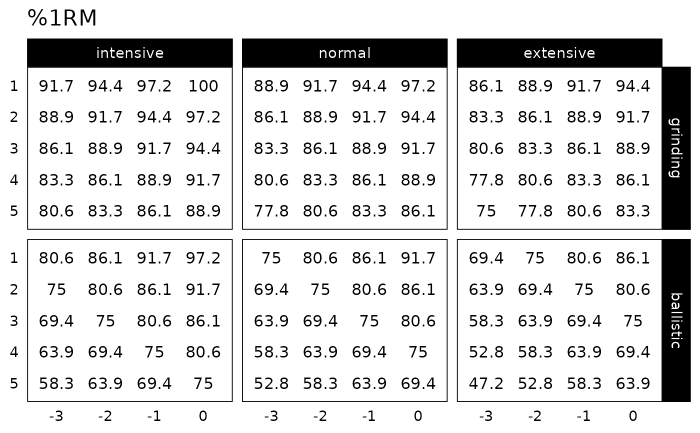

Function for creating ggplot2 plot of the Progression Table
Usage
plot_progression_table(
progression_table,
plot = "%1RM",
signif_digits = 3,
multiplier = 1,
font_size = 14,
...
)Arguments
- progression_table
Function for creating progression table
- plot
Character string. Options include "%1RM" (default) and "adjustment"
- signif_digits
Rounding numbers for plotting. Default is 3
- multiplier
Factor to multiply the adjustment. Useful when converting to percentage. Default is 1
- font_size
Numeric. Default is 14
- ...
Forwarded to the
generate_progression_tablefunction
Examples
plot_progression_table(progression_RIR_increment, "%1RM", reps = 1:5)
plot_progression_table(progression_RIR_increment, "adjustment", reps = 1:5)
# Create progression pot by using specific reps-max table and klin value
plot_progression_table(
progression_RIR,
reps = 1:5,
max_perc_1RM_func = max_perc_1RM_linear,
klin = 36
)
